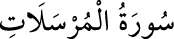

77- el-MÜRSELÂT SÛRESİ
Mekke’de inmiştir. 50 âyettir. «Gönderilenler» anlamına gelen «el-mürselât»
kelimesi ile başladığı için sûre bu adı almıştır. Müfessirler, «gönderilenler»den
maksadın, âlemin idâresi ile görevli bir kısım melekler veya rüzgârlar, yahut
peygamberler, yahut da Kur’an âyetleri olabileceğini belirtmişlerdir.